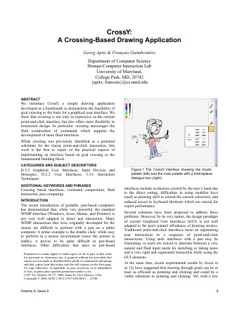

UIST 2026 workshop · Detroit · Monday 2 November
Agentic Reimplementation as Community Practice
Agentic coding tools can now reimplement the systems described in research papers. This workshop brings the UIST community to revibe prior papers, test ways to evaluate revibes, and discuss the implications of revibing and agentic coding for HCI research.

Try the revibe by drawing a stroke
CrossY, UIST 2004, rebuilt from the paper alone.
Background
Software artifacts for most technical HCI projects are unavailable, which makes it hard to extend prior work, use them as strong baselines, or replicate results. Adar et al. show that agentic tools can reimplement interactive systems directly from the papers describing them.
Where it fails. Features needing a model or library that is no longer available, drag and drop that would mean rewriting the underlying visualization library, agents building things the paper listed as future work, and agents writing their own prompts even when the paper published them.
Ten systems, best run out of 100%
Each bar is one system's best run, graded against a rubric built from its own paper — rubrics differ in length, so scores are the share of that system's own tests passed. Spellburst, VizAbility and XCreation came back complete.
A paper, and what came back
Mean revibeability by tool
Each tool's mean over the systems it revibed; the three tools built twenty seven reimplementations in all. Scores are tied to the models each tool ran, and will shift as those change.
Interactive group activities, ranging from a revibe hackathon in the morning to evaluation and discussion in the afternoon.
A step by step walkthrough of revibing one UIST system paper, chosen from participant nominations. You follow along in groups of two or three, brainstorm remixes while the agents run, then add your own extension.
Each group walks through their revibe and any remixes they made. Participants vote on the most faithful revibe and the most interesting remix.
Brainstorm validation approaches for revibes, then cluster them at a shared wall to create an evaluation catalog.
Two rounds of discussion on broader meta topics, then a cross-table exchange to synthesize arguments, opinions and ideas.
We aim to finish the day with concrete outcomes to share with the community.
Register through the UIST 2026 registration system, which is open now. The workshop is in person only and capacity is limited by the venue.
Closer to the date we will send registered participants a short form inviting their ideas and thoughts for the day.
OpenAI is supporting the workshop with API credits for participants to use during the day's revibing activities.